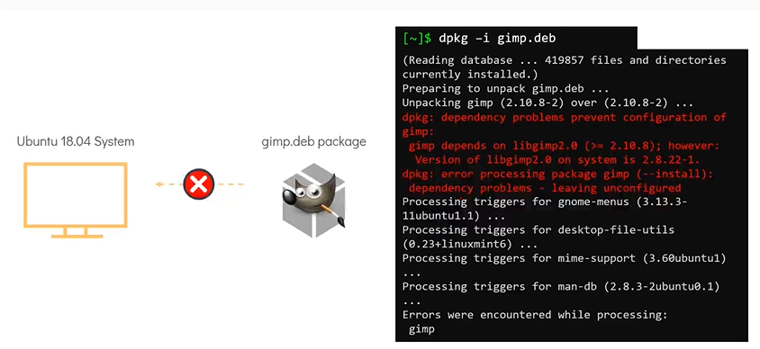
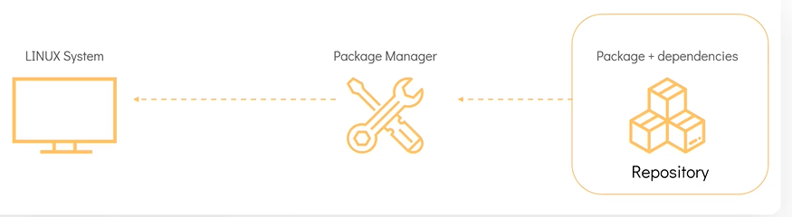

Package Management Distribution
In this section, we will take a look at the Linux Package Management tools used in different linux distribution - Will start with introduction to the package management.
Introduction to Package Managers
For Debain/Ubuntu, it is apt/dpkg and for CentOs/Redhat, it is RPM
Question : What is the difference between CentOS, RHEL and Ubuntu*?
- There are hundreds of Linux distributions in use today
One of the common ways to catagorize linux distribution is by the package manager it uses.
- For example: Distributions such as RHEL, Fedora and CentOS. are based on RPM. Hence they are known as RPM based distribution. The Debian family including Ubuntu, Debian and Linux Mint e.t.c. make use of Debian based package managers such as the DPKG.

Now, Lets compare RHEL and CentOS Operating Systems.

What is a package?
- A package in its simplest defination is a compressed archieve that contains all the files that are required by a particular software to run.
- For example: Lets consider an Ubuntu System, we want to install a simple editing system such as
gimpwhich stands forGNU Image Manipulation System. To do this, we can make use of thegimp.debpackage which contains all the software binaries and files needed to for the image editor to run along with the metadata which provides the information about the software itself.
Thats seems to be a quite easy process, why don't we do all the time? download a package and install it on a linux servers. Wondering the need of package managers?
- There are hundreds of linux distributions are there, these distributions runs different sets of tools and libraries, software and possibly even different linux kernels as a result of this a linux program may not run the same way from one system to another. To fix this problem packages include a manifest of dependencies or list of programs in versions that must be satified for the package software to run correctly on a given computer.
- Take a look at the errors in the installation while attempting to install
gimp.debon this ubuntu 18.04 system, the dependencies failed as a result the installations failed. Bare in mind that each of these dependent packages may have dependencies of their own which makes package installation management a very tedious process. This is where aPackage Managercomes into save the day.

A package manager is a software in a linux system that provides the consistent and automated process in installing, upgrading, configuring and removing packages from the operating system.

Functions of Package Manager
Types of Package Managers
A Linux distribution supports different types of package managers, some of the common ones are below